Cómo recepcionar, despachar y consultar casos en FALCON CAD, y cómo resolver usted mismo lo que suele salir mal antes de escalar a la mesa de ayuda.
Este manual explica el uso diario de FALCON CAD al personal de una central de emergencias. Está escrito para que usted pueda resolver por su cuenta la mayoría de las dudas y de los tropiezos que aparecen en el turno, y para que, cuando sí haya que llamar a soporte, la llamada llegue con la información que hace falta para atenderla rápido.
No describe los módulos de administración de la plataforma, que son de uso exclusivo del proveedor y no aparecen en el menú de los usuarios de una central. Tampoco cubre la instalación, el despliegue ni la configuración de servidores.
Todas las pantallas de este manual son capturas del sistema en funcionamiento, tomadas sobre una instancia de demostración con datos ficticios de un municipio llamado Municipio Demo. Ningún dato corresponde a personas ni a casos reales. Su pantalla puede variar en los nombres de agencias, canales y códigos, porque cada central configura los suyos.
| Versión | Fecha | Cambios |
|---|---|---|
| 1.0 | 06/10/2026 | Primera edición. Cubre recepción, despacho, videollamada, consulta, panel, mapa, recursos, catálogos y administración. |
| Despachar | Texto que aparece tal cual en la pantalla: un botón, una pestaña, el nombre de un campo. |
| Figura 3 | Las imágenes están numeradas por capítulo; el texto se refiere a ellas por ese número. |
| Nota | Información útil que conviene recordar. |
| Importante | Algo que, si se pasa por alto, causa un problema real. |
FALCON CAD se usa desde el navegador. No hay nada que instalar. Funciona en Chrome, Edge, Firefox y Safari; para los puestos de la central recomendamos Chrome o Edge actualizados, que son los que mejor manejan el audio y el video de las videollamadas.
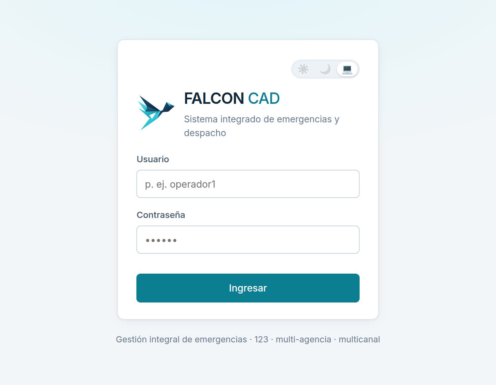
Su usuario es personal. Todo lo que se hace queda registrado con su nombre: quién recepcionó, quién despachó, quién cerró. Prestar la sesión no es un favor: es poner su nombre en lo que haga otra persona.
Si su central tiene activada la verificación en dos pasos, después de la contraseña el sistema le pedirá un código de seis dígitos. La primera vez tendrá que vincular una aplicación de autenticación —Google Authenticator, Microsoft Authenticator, Authy o la que use su entidad— escaneando el código QR que aparece en pantalla.
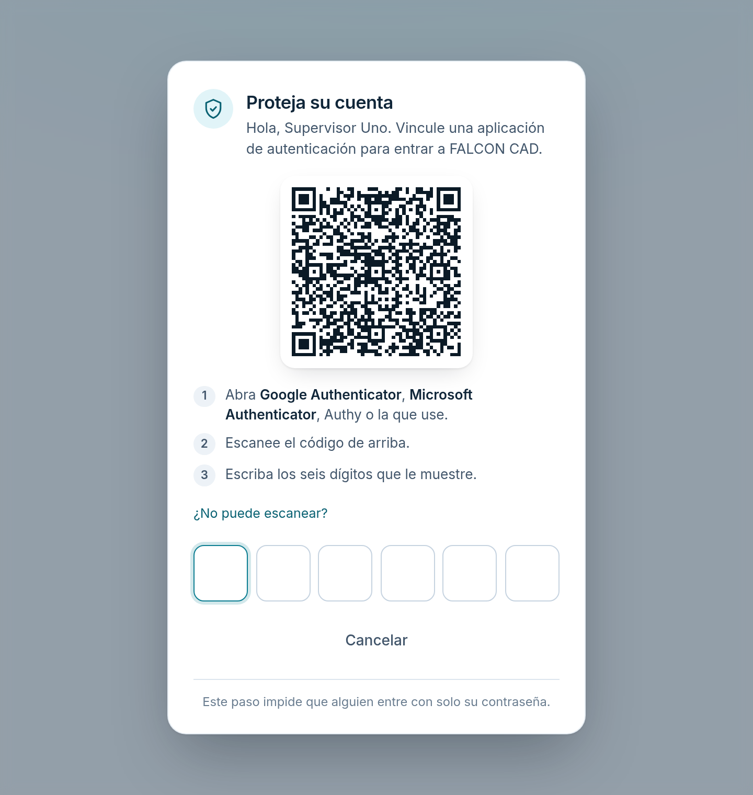
De ahí en adelante, cada vez que entre, abra la aplicación y escriba los seis dígitos. El código cambia cada 30 segundos. Si el sistema no se lo acepta, lo más probable es que la hora de su teléfono esté puesta a mano: póngala en automático y vuelva a intentarlo.
La barra superior no es igual para todos. Usted ve únicamente los módulos para los que tiene permiso. Si un compañero ve una opción que usted no, no es un error del sistema: son permisos distintos, y los asigna el administrador de su central.
| Módulo | Para qué sirve | Quién suele usarlo |
|---|---|---|
| Recepción | Tomar un caso nuevo | Operador de recepción |
| Despacho | Atender la cola y mandar unidades | Despachador |
| Consulta | Buscar casos y exportar | Todos |
| Recursos | Flota y disponibilidad | Despachador, supervisor |
| Panel | Indicadores y tiempos | Supervisor |
| Mapa | Dónde ocurren los casos | Supervisor |
| Catálogos | Agencias, canales y códigos | Administrador |
| Administración | Usuarios, roles e integraciones | Administrador |
Junto a su nombre, arriba a la derecha, hay tres botones para elegir el tema: claro, oscuro o el del sistema. En una sala con poca luz, el oscuro cansa menos la vista en un turno de noche. La elección se recuerda en ese equipo.
Es la pantalla donde empieza todo. Está pensada para rellenarse mientras usted habla, no después de colgar.
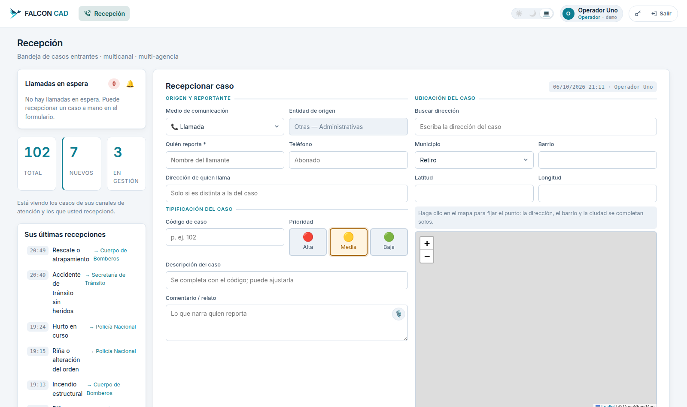
Escriba el relato aunque ya haya puesto el código. Dentro de seis meses, el código le dirá qué pasó; el relato le dirá cómo pasó. En una investigación, eso es lo que sirve.
El mapa arranca centrado en el municipio de su central, pero la búsqueda no está limitada a él: si el hecho ocurrió en la vía a otro municipio, el buscador lo encuentra igual.
Abajo del formulario elige a quién se le manda el caso: primero la agencia responsable y después uno o varios canales de esa agencia. Cada canal es una cola de despacho, y cada agencia atiende el mismo caso por separado y con su propio avance.
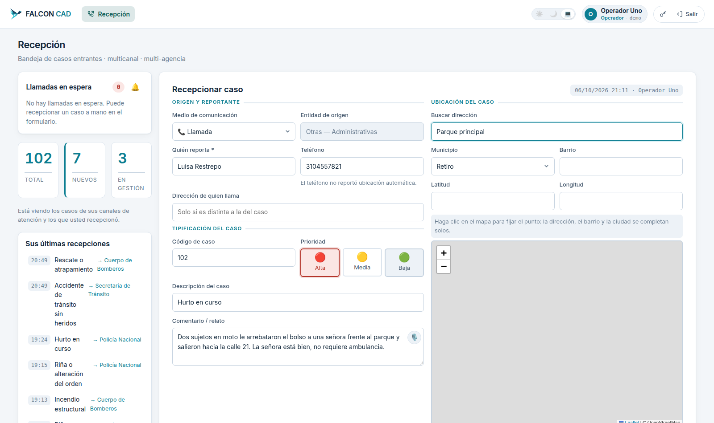
Un caso sin canal de atención no le llega a nadie: queda recepcionado, pero ninguna bandeja de despacho lo muestra. Si duda de a quién corresponde, mándelo a la agencia que parezca más cercana; remitirlo después es un clic.
Despacho es el tablero del turno. Lo primero que pide es elegir la bandeja: la agencia y, dentro de ella, el canal cuya cola quiere atender. El tablero muestra un canal a la vez, porque cada agencia atiende el mismo caso por separado y con su propio avance.
No es un error ni una pantalla vacía: es el estado inicial. Escoja arriba a la derecha la agencia y el canal, y la cola aparece.
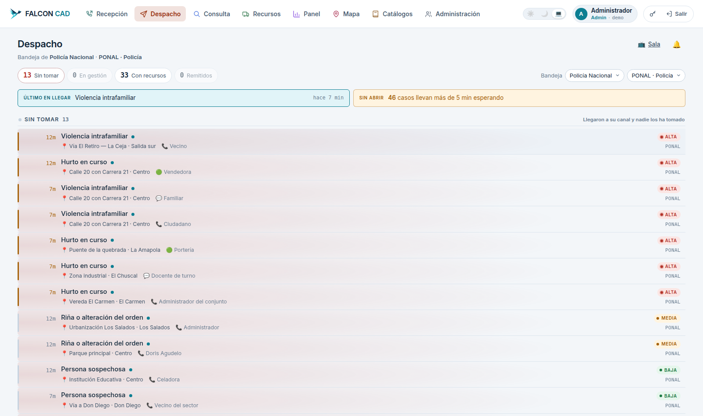
La franja de color a la izquierda de cada fila y la etiqueta de la derecha indican la prioridad. El número en minutos es cuánto lleva esperando ese caso, no la hora en que entró.
Solo se ofrecen los recursos de la agencia del caso que estén disponibles. Si la lista sale vacía, es que todas las unidades de esa agencia están ocupadas o fuera de servicio: revise el módulo Recursos antes de llamar a soporte.
Si al entrar a Despacho el sistema le dice que su usuario todavía no tiene un canal asignado, no es una falla: es un permiso que falta. Pídale a su administrador que lo adscriba al canal que le corresponde, en Administración → Usuarios.
Al abrir un caso se llega a su ficha: todo lo que se sabe de él y todo lo que se puede hacer con él. Las pestañas de arriba separan la información de la acción.
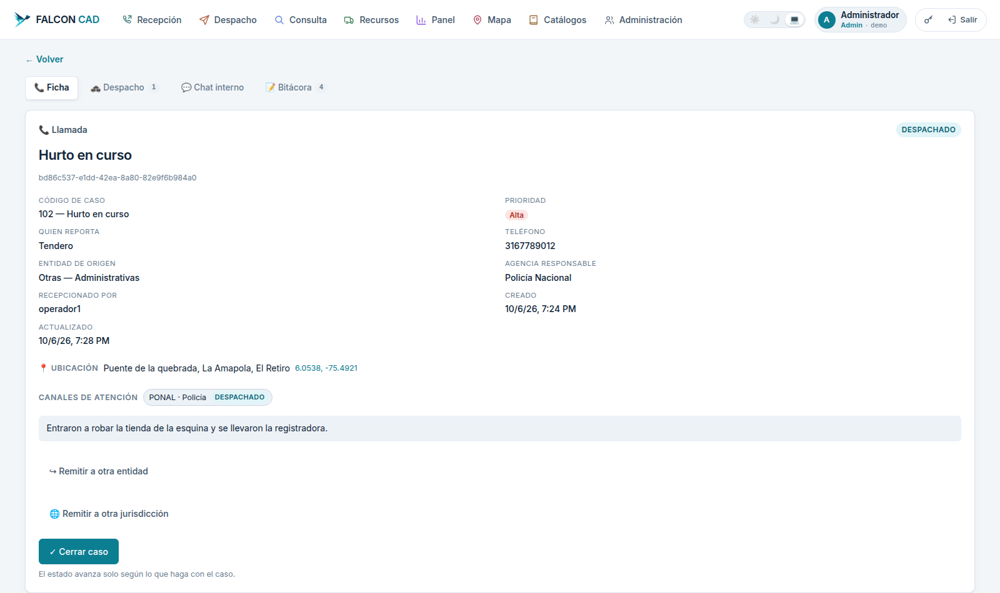
| Pestaña | Qué encuentra |
|---|---|
| Ficha | Los datos del caso y los botones para remitirlo o cerrarlo. |
| Despacho | Las unidades asignadas y el botón para despachar otra. El número junto al nombre es cuántas lleva. |
| Chat interno | Conversación entre los funcionarios que atienden el caso. No la ve el ciudadano. |
| Bitácora | Todo lo que pasó, con hora y autor. Es el registro que no se puede borrar. |
El botón Cerrar caso pide dos cosas, y las dos son obligatorias:
Al cerrar, las unidades asignadas al caso quedan libres automáticamente: no hace falta liberarlas a mano.
Si el caso terminó siendo algo distinto de lo que se recepcionó, al cerrarlo puede corregir la tipificación. Eso no es lo mismo que el código de cierre: el código de cierre es el desenlace; la tipificación es de qué se trataba en realidad.
Un caso cerrado se puede reabrir si la situación continúa. Según la configuración de su central, puede que usted tenga que solicitar la reapertura y que un supervisor la autorice. En cualquier caso, la reapertura queda en la bitácora con el motivo.
Desde la ficha de un caso puede abrir una videollamada con quien reporta. El ciudadano no necesita instalar nada: recibe un enlace, lo abre en el navegador de su teléfono y la llamada arranca.
| Control | Qué hace |
|---|---|
| Grabando | Indica que la llamada se está grabando y queda adjunta al caso. |
| Ampliar | Pone el video del ciudadano a pantalla completa. |
| Flotante | Deja la llamada en una ventana pequeña para que usted pueda seguir trabajando el caso. |
| Colgar | Termina la llamada. La grabación queda guardada. |
Al entrar, el teléfono del ciudadano le pide permiso para compartir la ubicación. Si lo acepta, usted ve su posición y su recorrido sobre el mapa — que es, muchas veces, la única forma de ubicar a alguien que no sabe dónde está.
Si el permiso se niega o el teléfono no responde, el sistema se lo avisa en pantalla y le dice el motivo. El más frecuente en iPhone no es que el ciudadano haya dicho que no, sino que el servicio de ubicación está apagado para Safari y el teléfono ni siquiera muestra la pregunta. En el capítulo 10 está la ruta exacta para explicársela por teléfono.
La videollamada se graba. Dígaselo al ciudadano. Las grabaciones quedan adjuntas al caso y se conservan según la política de retención de su entidad; pasado ese plazo se trasladan al archivo permanente y dejan de poderse reproducir desde la ficha.
Consulta es el buscador de todo lo recepcionado, abierto o cerrado. Es la pantalla a la que se acude cuando alguien pregunta «¿qué pasó con…?».
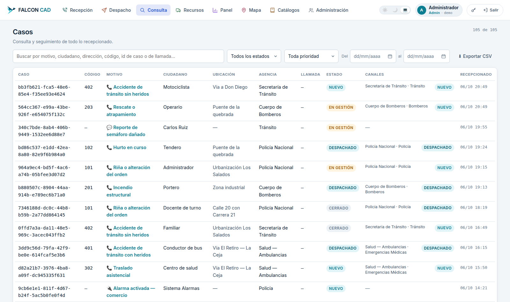
Los filtros se combinan: estado cerrado + prioridad alta + un rango de fechas responde «¿cuántos casos de alta prioridad cerramos la semana pasada?» sin pasar por el Panel.
Exportar CSV descarga lo que está viendo con los filtros puestos, no la base entera. Si necesita un informe de un mes, filtre primero por fechas y después exporte. El archivo abre en Excel o en LibreOffice.
Si un caso que usted recepcionó no aparece, revise el filtro de estado: el valor por defecto puede estar ocultando los cerrados. Y recuerde que, según su rol, puede estar viendo solo los casos de sus canales.
El Panel responde cómo va la operación en un período. Arriba se elige el rango de fechas; si no se elige nada, muestra los últimos 30 días.
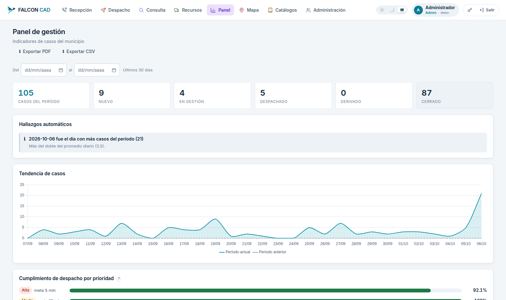
Exportar PDF y Exportar CSV entregan el mismo período que está viendo, listo para un informe.
El Mapa responde dónde. Muestra la ubicación histórica de los casos y permite filtrarlos por código, por agencia y por fechas.
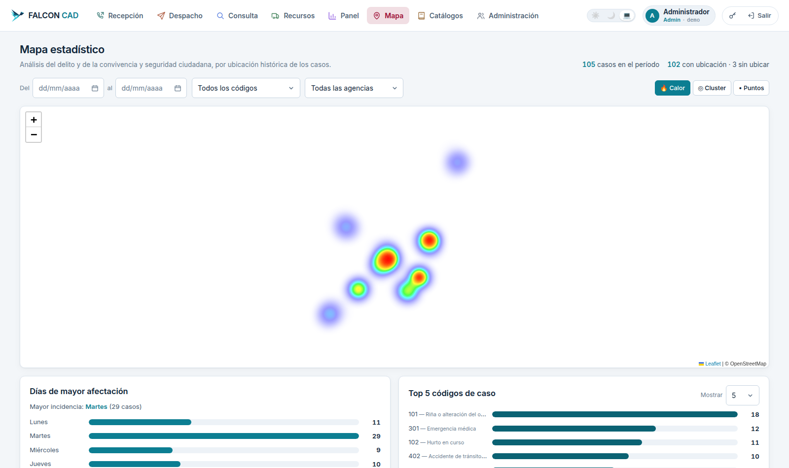
En la captura, el fondo cartográfico aparece en blanco porque el equipo donde se tomó no tenía salida a internet hacia el servidor de mapas. En su central, la misma pantalla muestra las calles del municipio debajo de los puntos.
El contador de arriba indica cuántos casos del período tienen ubicación y cuántos no. Un caso sin ubicación no aparece en el mapa, y por eso vale la pena insistir en ubicar bien en la recepción: lo que no se ubica, no se puede analizar después.
Recursos es el inventario de unidades de la central —patrullas, motorizados, ambulancias, máquinas, grúas— y su disponibilidad en este momento.
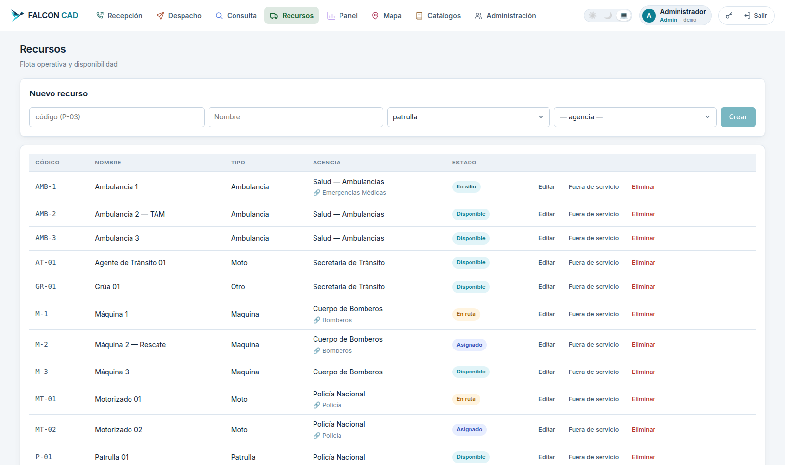
| Estado | Qué significa |
|---|---|
| Disponible | Se puede despachar. Es la única que aparece al asignar. |
| Asignado | Tiene un caso, todavía no se ha movido. |
| En ruta | Va hacia el sitio. |
| En sitio | Llegó. |
| Fuera de servicio | No se puede despachar: mantenimiento, avería, fin de turno. |
Los tres primeros los mueve el despacho por sí solo. Fuera de servicio se marca a mano, y es el que hay que acordarse de devolver a Disponible cuando la unidad vuelve: mientras siga marcada, nadie podrá despacharla.
Catálogos son las listas que alimentan la recepción y el despacho. Las administra el administrador de la central, pero conviene que todos sepan de dónde salen.
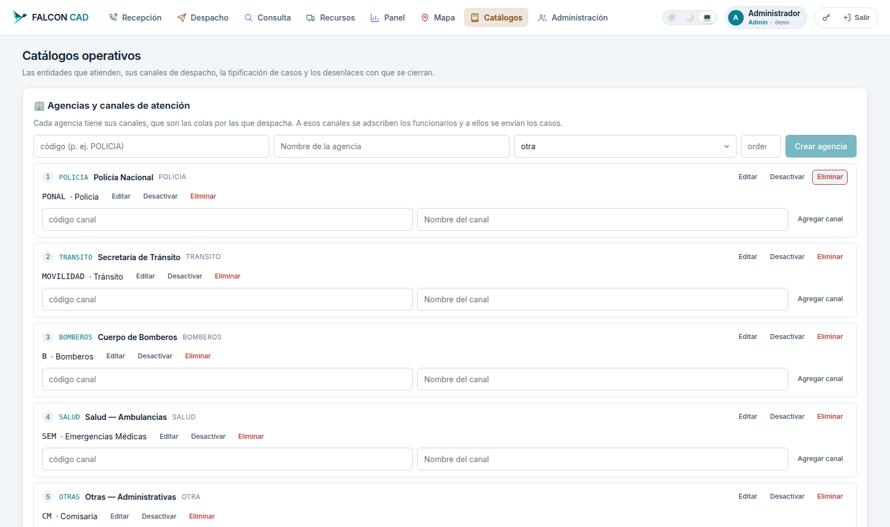
Desactivar y Eliminar no son lo mismo. Desactivar saca el elemento de las listas nuevas pero conserva los casos que ya lo usaron. Eliminar solo está disponible cuando nada lo está usando. Ante la duda, desactive.
Administración reúne las cuentas, los roles y las integraciones de su central. Solo la ven los usuarios con ese permiso.
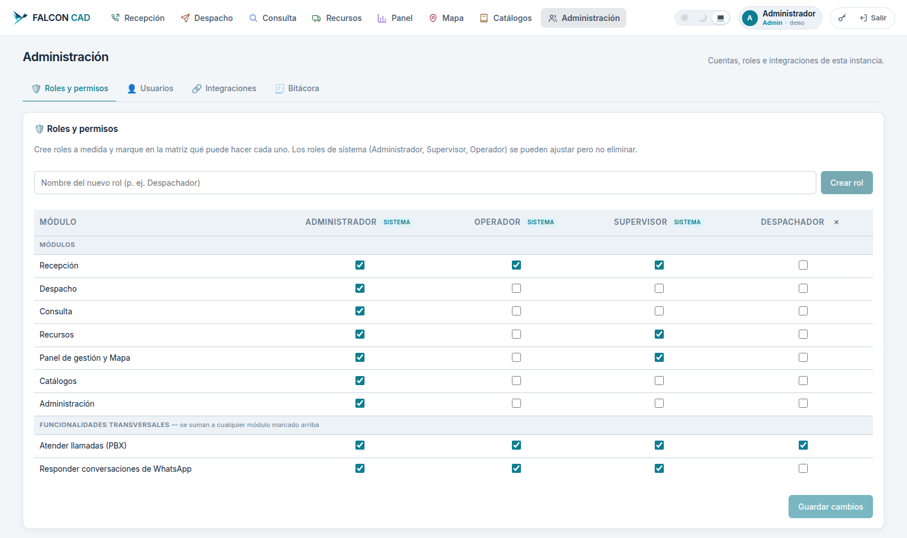
La matriz es la respuesta a «¿por qué mi compañero ve una opción que yo no?». Se marca o se desmarca lo que cada rol puede hacer y se guarda. Las funcionalidades transversales de la parte de abajo —atender llamadas, responder WhatsApp— se suman a cualquier módulo marcado arriba.
Si los roles de sistema no encajan con la organización de la central, se crea uno a medida con el nombre que se quiera y se marca exactamente lo que debe poder hacer.
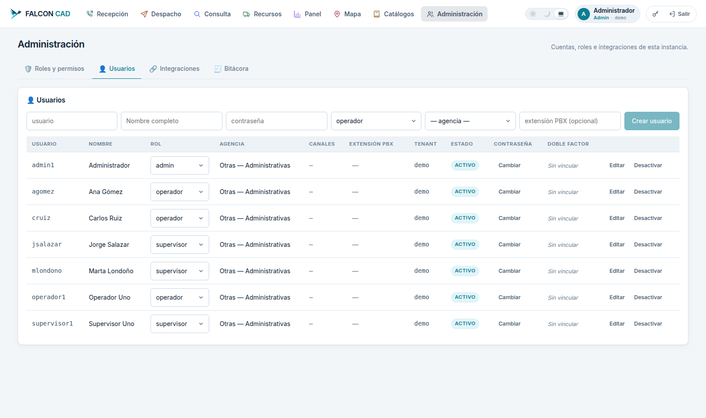
Cuando un funcionario cambia de teléfono o borra la aplicación de autenticación, no hay que crearle una cuenta nueva: el administrador restablece su segundo factor desde la ficha del usuario, y la próxima vez que entre el sistema le pedirá vincular de nuevo la aplicación.
Lo que sigue es la lista de lo que más se reporta a la mesa de ayuda y que, en la mayoría de los casos, se resuelve en el puesto en menos de dos minutos. Búsquelo por el síntoma.
El panel Llamadas en espera queda vacío.
Ctrl + F5.Las llamadas se dirigen a la extensión que las contesta. Si usted no está logueado en la extensión que recibió la llamada, el caso le aparece al compañero que sí lo está. Revise con su supervisor a qué extensión está asociado su usuario.
Cuando la llamada entra por WhatsApp, el identificador puede llegar con un prefijo técnico en lugar del número. No lo deje así: pregúntele el número al ciudadano y escríbalo en el campo Teléfono.
Casi siempre es la red del puesto, no el sistema.
Ctrl + F5.Es el problema más frecuente, y casi siempre es un iPhone con Safari.
Si el sistema le dice que el permiso fue denegado en un iPhone, lo más probable es que el teléfono ni siquiera haya preguntado, porque el servicio de ubicación está apagado para Safari. Dicte esta ruta por teléfono:
Ajustes → Privacidad y seguridad → Localización → Safari, y elegir Al usar la app. Después, volver a abrir el enlace de la videollamada.
En Android la ruta equivalente es Ajustes → Ubicación, y luego aceptar el permiso cuando el navegador lo pida.
No es un error: son permisos distintos. Los asigna el administrador de su central en Administración → Roles y permisos. Pídale que revise su rol.
La sesión vence por seguridad después de un tiempo sin actividad. Vuelva a entrar. No se pierde nada: lo que ya guardó está guardado. Lo único que se pierde es un formulario de recepción a medio llenar y sin guardar — por eso conviene guardar el caso apenas tenga el mínimo, y completarlo después.
No se perdió. Pasado el plazo de retención que fijó su entidad, las grabaciones salen de la base de datos y quedan resguardadas fuera de línea. Si necesita esa grabación para un requerimiento formal, solicítela a la mesa de ayuda indicando el número del caso y la fecha: se recupera, pero no es inmediato.
Ctrl + 0.F11.Solo se ofrecen los recursos de la agencia del caso que estén disponibles. Abra Recursos y mire: lo más común es que alguna unidad haya quedado marcada Fuera de servicio y nadie la devolvió a disponible al terminar el turno.
Llame cuando haya agotado lo del capítulo anterior, o cuando el problema esté en la lista de reporte inmediato. Un reporte bien hecho se atiende en una fracción del tiempo.
| Dato | Por qué hace falta |
|---|---|
| Su usuario | Para reproducir lo que usted ve, con sus permisos. |
| Hora exacta | Para encontrar el registro del momento en que falló. |
| Número del caso | Si el problema es con un caso concreto. |
| Qué estaba haciendo | El paso exacto: «al pulsar Despachar», no «no sirve». |
| Qué dijo la pantalla | El texto del mensaje, completo. Una foto de la pantalla vale el doble. |
| Si le pasa a otros | Distingue un problema del puesto de uno del sistema. Pregúntele a un compañero antes de llamar. |
Si el sistema no está disponible, siga atendiendo por el procedimiento manual de su central y anote lo esencial de cada caso: hora, quién reporta, teléfono, qué pasó y dónde. Cuando el servicio vuelva, esos casos se registran. Nunca deje de atender por esperar a que un sistema vuelva.